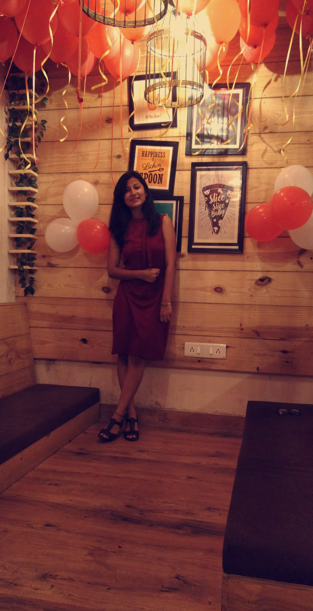

|  | Chanchal NegiComputer Science student.Poornima College Of Engineering Jaipur, Rajasthan I am pursuing btech in computer science domain from Poornima College Of Engineering. Fascinated by the technology and eagerness to learn new technical things keep me going on. I love coffee and love to make web look fascinating. Currently shaping my web development skills. My main aim is to be a fruitfull web developer. Contact info |
| Year | Name of courses |
|---|---|
| 2019 | Certification in c++ |
| 2020 | Certification in specialisation in Google IT automation using python |
| 2020 | Certication in python for data science |
| C++ | ⭐⭐⭐⭐ |
| Python | ⭐⭐⭐ |
| Web development | ⭐⭐ |
| C | ⭐⭐⭐⭐ |